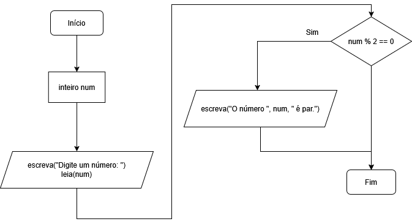
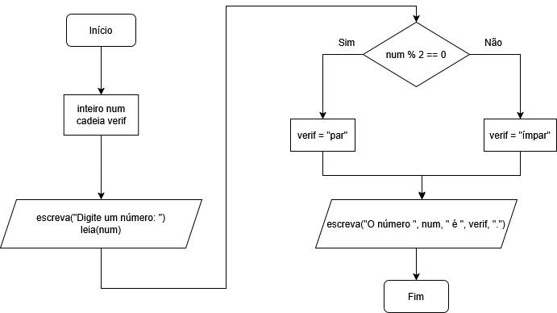
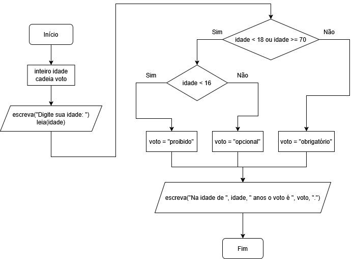
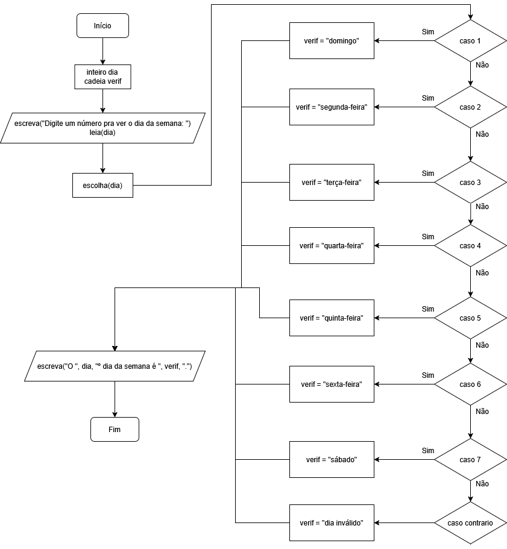

O comando se é usado quando você quer que o programa tome uma decisão. Ele verifica uma condição (uma comparação) e só executa um bloco de código se essa condição for verdadeira. Por padrão ele recebe um valor lógico (verdadeiro ou falso).
O senao é usado para dizer o que o programa deve fazer caso a condição não seja verdadeira.
É como se o computador estivesse seguindo um caminho:
Podemos usar o se sozinho, por exemplo:
programa {
funcao inicio() {
inteiro num
escreva("Digite um número: ")
leia(num)
se(num % 2 == 0) { // Verifica se é par
escreva("O número ", num, " é par.\n")
}
}
}
Veja o fluxograma do código acima:
Mas o senao, deve estar sempre acompanhado do se equivalente:
programa {
funcao inicio() {
inteiro num
cadeia verif
escreva("Digite um número: ")
leia(num)
se(num % 2 == 0) { // Verifica se é par
verif = "par"
}
senao { // Esse bloco é executado caso o se receba falso
verif = "ímpar"
}
escreva("O número ", num, " é ", verif, ".\n")
}
}
Ou seja, caso use o se, o senao pode ou não estar presente, pois este último trata o contrário de se.
Veja o fluxograma do código acima:
Podemos colocar um se dentro de outro se. Isso é útil quando só queremos fazer a segunda verificação se a primeira condição for verdadeira. Veja um exemplo:
programa {
funcao inicio() {
inteiro idade
cadeia voto
escreva("Digite sua idade: ")
leia(idade)
se(idade < 18 ou idade >= 70) { // Faz a primeira verificação
se(idade < 16) { // Só é executado se o de cima for verdadeirao
voto = "proibido"
}
senao {
voto = "opcional"
}
}
senao {
voto = "obrigatório"
}
escreva("Na idade de ", idade, " anos o voto é ", voto, ".\n")
}
}
O segundo se só funciona dentro do primeiro. Eles são independentes, mas o de dentro depende do de fora para ser executado. Esse tipo de estrutura se chama se aninhado
. Um outro bloco se pode ser colocado dentro do senao também.
Veja o fluxograma desse código:
Podemos testar várias condições diferentes, uma depois da outra, usando o senao se, como por exemplo:
programa {
funcao inicio() {
inteiro idade
cadeia fase
escreva("Digite sua idade: ")
leia(idade)
se(idade < 10) {
fase = "infância"
}
senao se(idade >= 10 e idade < 13) {
fase = "pré-adolescência"
}
senao se(idade >= 13 e idade < 18) {
fase = "adolescência"
}
senao se(idade >= 18 e idade < 65) {
fase = "fase adulta"
}
senao {
fase = "fase idosa"
}
escreva("Na idade de ", idade, " anos, você está na ", fase, ".\n")
}
}
Podemos ter quantos senao se quisermos. Eles são testados de cima para baixo. Assim que um deles for verdadeiro, os demais nem são testados. Tanto os senao se quanto o último senao são opcionais.
A estrutura escolha funciona como um menu de opções. Ela verifica o valor de uma variável e executa apenas o caso que combina com esse valor. É útil quando você precisa testar vários valores possíveis para a mesma variável.
Veja um exemplo de uso:
programa {
funcao inicio() {
inteiro dia
cadeia verif
escreva("Digite um número pra ver o dia da semana: ")
leia(dia)
escolha(dia) {
caso 1:
verif = "domingo"
pare
caso 2:
verif = "segunda-feira"
pare
caso 3:
verif = "terça-feira"
pare
caso 4:
verif = "quarta-feira"
pare
caso 5:
verif = "quinta-feira"
pare
caso 6:
verif = "sexta-feira"
pare
caso 7:
verif = "sábado"
pare
caso contrario:
verif = "dia inválido"
pare
}
escreva("O ", dia, "º dia da semana é ", verif, ".\n")
}
}
Note que, ao final de cada caso, devemos colocar pare para que a estrutura escolha seja finalizada. O pare no último caso (no caso, o caso contrario), pode ser omitido.
Podemos ter quantos caso quisermos, o caso contrario só é executado caso nenhum dos valores sejam encontrados, e ele é opcional (tal como o senao).
Veja o fluxograma do código acima:
Podemos testar mais de um caso de uma só vez, como por exemplo:
programa {
funcao inicio() {
caracter letra
cadeia fonema
escreva("Digite uma única letra: ")
leia(letra)
escolha(letra) {
caso 'A':
caso 'a':
caso 'E':
caso 'e':
caso 'I':
caso 'i':
caso 'O':
caso 'o':
caso 'U':
caso 'u':
fonema = "vogal"
pare
caso contrario:
fonema = "consoante ou não é uma letra"
pare
}
escreva("A letra ", letra, " é ", fonema, ".\n")
}
}